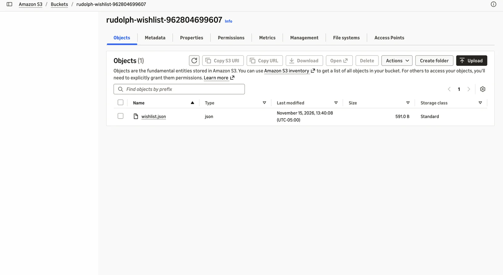
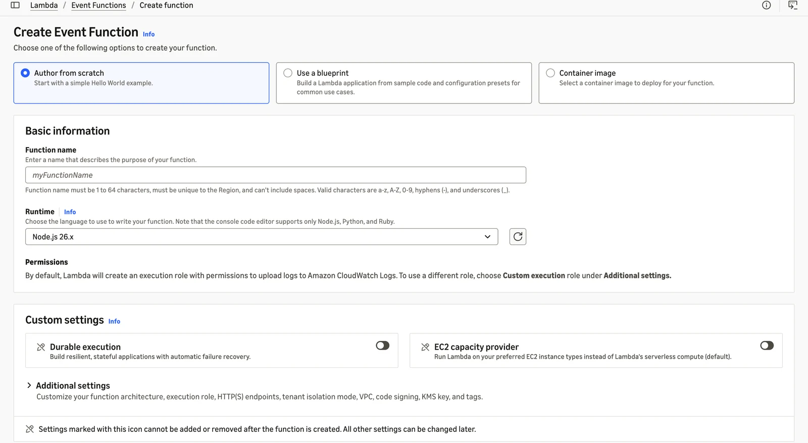
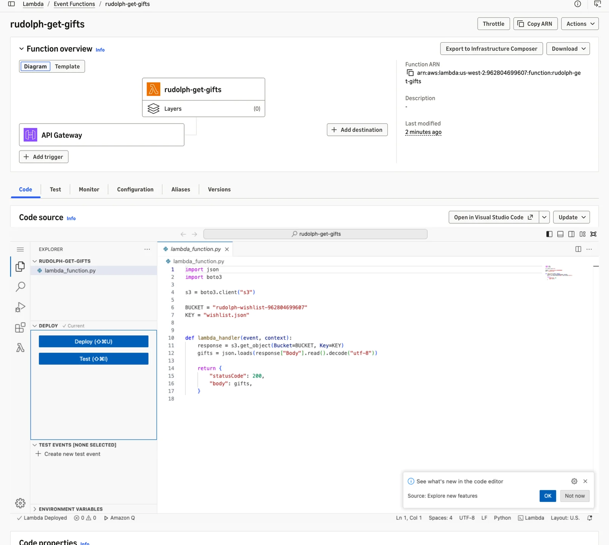
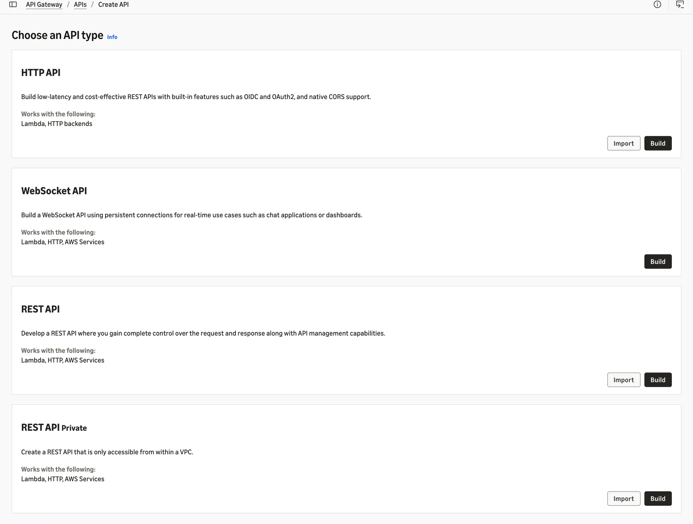
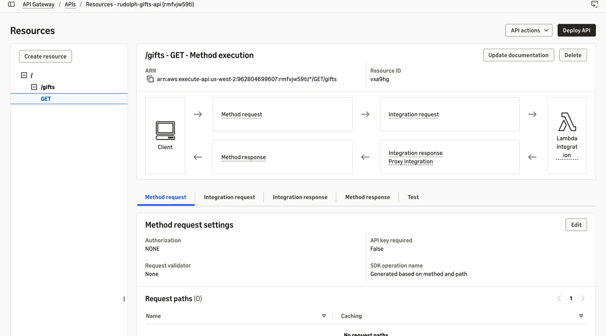
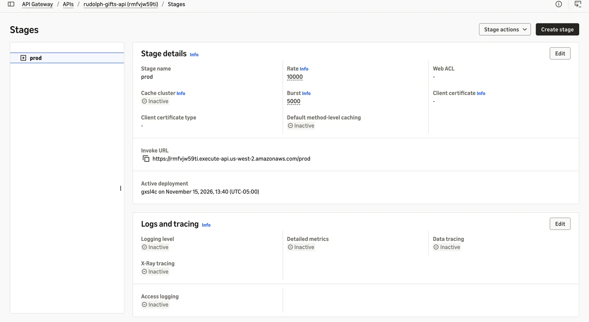
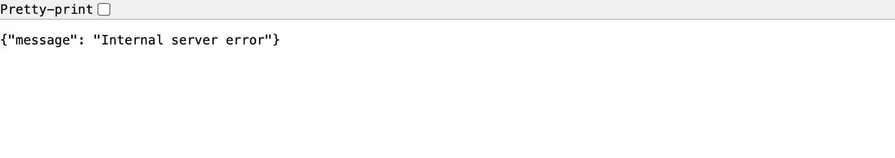
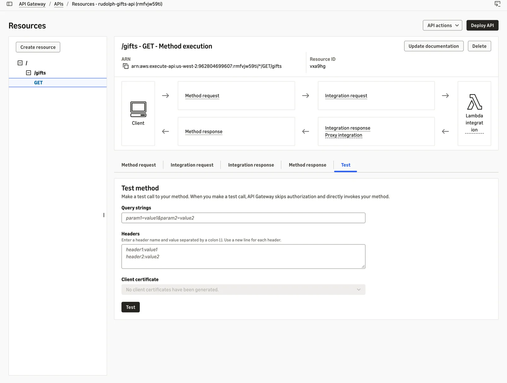
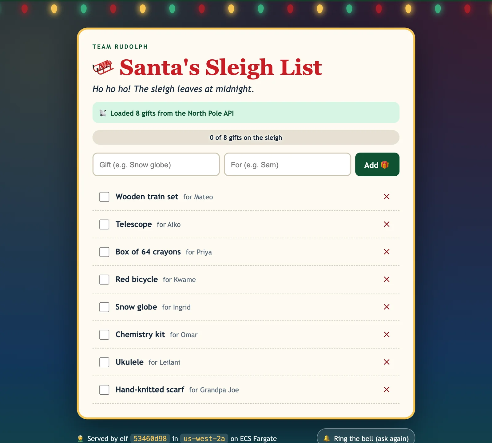

A web address that returns the gift list from a file in S3, using a Lambda function and API Gateway. No servers, and one trap.
| Service | Its job here |
|---|---|
| S3 | Stores the file. The bucket stays private. |
| Lambda | Runs your code only when someone asks, and bills by the millisecond. It reads the file. |
| API Gateway | Gives the function a public HTTPS address and turns web requests into function calls. |
You will meet two errors on the way. The first one is explained in the guide. The second one is not: the guide will take you right up to it and then leave you to investigate. That is deliberate.
Do everything in us-west-2 (Oregon).
The quickest way is from your workshop terminal, inside your cloned repository:
ACCOUNT=$(aws sts get-caller-identity --query Account --output text)
aws s3 mb s3://$TEAM-wishlist-$ACCOUNT
aws s3 cp data/wishlist.json s3://$TEAM-wishlist-$ACCOUNT/wishlist.json
echo "Our bucket is: $TEAM-wishlist-$ACCOUNT"Write the bucket name down. Then check it in the S3 console:

Why the account number in the name? Bucket names are unique across every AWS customer in the world. Adding your account number makes a clash very unlikely.
[[TEAM]]-get-gifts
Read the sentence under Permissions on that page: Lambda creates an execution role that may upload logs. Logs, and nothing else. Remember that.
On the function's page, scroll to Code source. Replace everything in lambda_function.py with this, and put your real bucket name in:
import json
import boto3
s3 = boto3.client("s3")
BUCKET = "your-bucket-name-here"
KEY = "wishlist.json"
def lambda_handler(event, context):
response = s3.get_object(Bucket=BUCKET, Key=KEY)
gifts = json.loads(response["Body"].read().decode("utf-8"))
return {
"statusCode": 200,
"body": gifts,
}Choose Deploy (the blue button to the left of the code). Nothing you type takes effect until you deploy.

ping, keep the sample JSON, and save.The result is red, and somewhere in it you will read AccessDenied ... is not authorized to perform: s3:GetObject.
This is AWS working correctly. The function runs as its execution role, and that role may only write logs. Nobody has said it may read your bucket.
{
"Version": "2012-10-17",
"Statement": [
{
"Effect": "Allow",
"Action": "s3:GetObject",
"Resource": "arn:aws:s3:::your-bucket-name-here/wishlist.json"
}
]
}read-wishlist, and create it.You should now get a green result with "statusCode": 200 and all eight gifts.
You could have attached AmazonS3FullAccess and it would have worked. It would also let this function delete every bucket in the account. The policy above allows one action on one object. Give each thing only what it needs.

[[TEAM]]-gifts-api. Endpoint type: Regional. Choose Create API.gifts. Leave the rest and choose Create resource./gifts selected, choose Create method:
[[TEAM]]-get-gifts
What is proxy integration? API Gateway hands the whole web request to your function, and expects your function to describe the whole web response: status code, headers and body.
An API is not reachable until it is deployed to a stage.
prod. Choose Deploy.
Your full address is the Invoke URL plus /gifts:
https://abc123xyz.execute-api.us-west-2.amazonaws.com/prod/giftsRemember this later: whenever you change the API itself (a method, a resource, a setting), you must choose Deploy API again. Changes to the Lambda code do not need an API deploy.
Paste your full address into a browser tab.

The Lambda test was green. The API says Internal server error. Both are true at the same time.
The guide stops helping here. Work out what is wrong and fix it.

The test log ends with Execution failed due to configuration error: Malformed Lambda proxy response and status 502.
With proxy integration the body must be a string. The function returns a Python list. Lambda's own test does not care, which is why it was green. Turn the list into a JSON string:
return {
"statusCode": 200,
"headers": {"Content-Type": "application/json"},
"body": json.dumps(gifts),
}Choose Deploy in the Lambda editor, then reload your API address.
Once the address shows eight gifts in a browser tab, put it into src/config.js as API_URL, rebuild your image, and run it.
The app will show a red box. Press F12, open the Console tab, and you will find a message that mentions CORS.
Your app is served from one website (your load balancer) and asks for data from a different one (your API). Browsers refuse to hand that data to the page unless the second site says "yes, that page may read me". It says so with a response header named Access-Control-Allow-Origin.
With proxy integration, the headers come from your function. Add the header next to statusCode in your return value. The value * means "any website may read this", which is fine for a public gift list.
import json
import boto3
s3 = boto3.client("s3")
BUCKET = "your-bucket-name-here"
KEY = "wishlist.json"
def lambda_handler(event, context):
response = s3.get_object(Bucket=BUCKET, Key=KEY)
gifts = json.loads(response["Body"].read().decode("utf-8"))
return {
"statusCode": 200,
"headers": {
"Content-Type": "application/json",
"Access-Control-Allow-Origin": "*",
},
"body": json.dumps(gifts),
}What about the "Enable CORS" button in API Gateway? It sets up the answer to a browser's "preflight" question, which is needed for requests such as POST with JSON. A simple GET like yours skips the preflight, so the header from your function is all you need.
